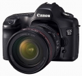

器材库 > 35mm画幅可换镜头数码相机 > EOS 5D

规格总览
产品类型
35mm画幅可换镜头数码相机
发布日期
2005-08-23
停产
是
影像规格
影像传感器
CMOS
影像传感器尺寸
35.8 × 23.8mm
总像素
1330万
有效像素
1280万
色彩滤镜
RGB原色滤镜
低通滤镜
位于图像感应器前，固定式
色彩空间
sRGB、Adobe RGB
最大解像度
4368×2912
静态图像尺寸
4368×2912；3168×2112；2496×1664
静态图像格式
JPEG, RAW, RAW+JPEG
静态图像质量
优，普通
画幅比
3:2
镜头和对焦
镜头卡口
Canon EF
兼容镜头
佳能EF系列镜头(EF-S系列镜头除外)
对焦系统类型
TTL-CT-SIR CMOS
对焦点
9个自动对焦点加6个辅助自动对焦点
对焦模式
单次自动对焦、 人工智能伺服自动对焦、 人工智能自动对焦、 手动对焦(MF)
自动对焦点选择
自动, 手动
所选自动对焦点显示
在取景器中重叠显示，并在液晶显示屏上显示
AF辅助灯
有
手动对焦
支持
曝光控制
测光模式
中央重点测光, 多分区评价测光, 点测光, 局部测光
测光范围
1EV~20EV
曝光模式
Auto, P（程序自动曝光）, A（光圈优先自动曝光）, S（快门速度优先自动曝光）, M（手动测光曝光）, E-TTL II自动闪光
快门类型
电子控制，纵走式，焦平面快门
快门速度
1/8000 - 30秒，B门；闪光同步速度：1/200秒
曝光补偿
±2EV以1/3或1/2EV级调整
自动曝光锁
有
自动包围曝光
在±2级间以1/3或1/2级为单位调节
ISO感光度
100, 200, 400, 800, 1600, 可扩展至50-3200
白平衡
日光, 多云, 闪光灯, 色温调节, 荧光灯, 自定义, 阴影, 自动, 钨丝灯
自拍
10秒
连拍
每秒3张，最多60张JPEG（大/优）或 17张RAW
闪光灯
外接闪光灯
使用EX系列闪光灯进行E-TTL II自动闪光
PC端子
有
取景器/显示屏
取景器
眼平五棱取景器
取景范围
96%
取景放大倍率
0.71倍
屈光度调节范围
-3.0 ~ +1.0
反光镜
快速瞬回半透明
取景器信息
自动对焦信息(自动对焦点、合焦确认指示灯)、曝光信息(快门速度、光圈值、自动曝光锁、曝光量、局部测光圆、曝光警告)、闪光信息(闪光灯准备就绪、高速同步、闪光曝光锁、闪光曝光补偿)、白平衡矫正、最大连拍数量、CF卡信息
景深预视
有
LCD类型
彩色TFT LCD
LCD尺寸
2.5英寸
LCD像素
23万
视野率
100%
亮度调节级数
5级
文件输入/输出
存储卡
CF
数据接口
USB2.0
视频/音频接口
Video 输出 (NTSC/PAL)
支持打印协议
PictBridge, DPOF
电源
电池
一节BP-511A、BP-514、BP-511或BP-512电池组
续航能力
20℃/ 68°F：约800张 0℃/ 32°F：约400张
机身规格
材质
镁合金机身外壳(顶部、前部、后部)和高强度的不锈钢机身骨架
颜色
黑色
尺寸
152 × 113 × 75mm
重量
810g
其它
用户自选功能
21种自定义功能共57个选项
工作温度
0-40℃
工作湿度
低于或等于85%
山水怡然烟雨中2015-01-13 00:014.88 分
操作性 4.50功能性 5.00美观性 5.00趣味性 5.00耐用性 5.00性价比 5.00解像力 5.00色彩还原 4.50
brotherxun2014-05-27 21:575 分
操作性 5.00功能性 5.00美观性 5.00趣味性 5.00耐用性 5.00性价比 5.00解像力 5.00色彩还原 5.00
fenyuat2014-04-02 22:284.38 分
操作性 3.00功能性 4.50美观性 5.00趣味性 3.50耐用性 5.00性价比 5.00解像力 4.50色彩还原 4.50
ulic20112014-03-16 23:024.75 分
操作性 4.00功能性 4.00美观性 5.00趣味性 5.00耐用性 5.00性价比 5.00解像力 5.00色彩还原 5.00
无忌光2014-01-28 16:174.44 分
操作性 4.00功能性 4.00美观性 4.50趣味性 4.00耐用性 4.50性价比 5.00解像力 4.50色彩还原 5.00
城市前方2014-01-25 03:26
沈大先生2014-01-13 22:544.5 分
操作性 4.50功能性 4.00美观性 4.50趣味性 4.50耐用性 4.50性价比 5.00解像力 4.50色彩还原 4.50
30d40d50d2014-01-08 18:590.5 分
操作性 0.50功能性 0.50美观性 0.50趣味性 0.50耐用性 0.50性价比 0.50解像力 0.50色彩还原 0.50
30d40d50d2013-11-26 00:42
chibang2013-11-17 21:495 分
操作性 5.00功能性 5.00美观性 5.00趣味性 5.00耐用性 5.00性价比 5.00解像力 5.00色彩还原 5.00
30d40d50d2013-11-12 00:25
30d40d50d2013-10-31 00:17
良子学摄影2013-10-29 23:234.31 分
操作性 4.50功能性 4.50美观性 4.50趣味性 4.00耐用性 4.00性价比 4.00解像力 4.50色彩还原 4.50
daya2013-10-08 15:564.5 分
操作性 4.00功能性 4.00美观性 4.50趣味性 4.00耐用性 4.50性价比 5.00解像力 5.00色彩还原 5.00
intherain2013-09-17 21:574.81 分
操作性 5.00功能性 5.00美观性 5.00趣味性 5.00耐用性 4.00性价比 5.00解像力 4.50色彩还原 5.00
十八刀2013-08-10 22:374.63 分
操作性 4.50功能性 4.50美观性 4.50趣味性 4.50耐用性 4.50性价比 5.00解像力 5.00色彩还原 4.50
U47Captain2013-07-06 22:244.25 分
操作性 5.00功能性 4.00美观性 4.00趣味性 3.00耐用性 3.00性价比 5.00解像力 5.00色彩还原 5.00
devilshoot2013-04-24 19:184.06 分
操作性 5.00功能性 4.00美观性 3.50趣味性 3.00耐用性 3.50性价比 4.50解像力 4.50色彩还原 4.50
fengq1002013-03-28 16:044.5 分
操作性 4.50功能性 4.50美观性 4.50趣味性 4.50耐用性 3.00性价比 5.00解像力 5.00色彩还原 5.00
qiyueliuhuo2013-02-16 19:494.69 分
操作性 4.50功能性 4.50美观性 4.50趣味性 4.50耐用性 4.50性价比 5.00解像力 5.00色彩还原 5.00
mdf00122013-01-02 22:244.5 分
操作性 4.50功能性 4.50美观性 4.00趣味性 3.50耐用性 4.50性价比 5.00解像力 5.00色彩还原 5.00
卡诺斯2012-12-27 11:274.81 分
操作性 5.00功能性 5.00美观性 5.00趣味性 5.00耐用性 3.50性价比 5.00解像力 5.00色彩还原 5.00
youngzh2012-10-17 18:154.19 分
操作性 4.50功能性 4.00美观性 3.50趣味性 4.50耐用性 3.50性价比 5.00解像力 4.00色彩还原 4.50
30d40d50d2012-09-21 01:42
十五的萝柚2012-08-04 17:114.69 分
操作性 4.50功能性 4.50美观性 5.00趣味性 4.50耐用性 4.00性价比 5.00解像力 5.00色彩还原 5.00
chengfeng52002012-07-28 22:575 分
操作性 5.00功能性 5.00美观性 5.00趣味性 5.00耐用性 5.00性价比 5.00解像力 5.00色彩还原 5.00
deu3142012-07-14 09:494.63 分
操作性 4.50功能性 4.50美观性 5.00趣味性 4.00耐用性 5.00性价比 5.00解像力 4.50色彩还原 4.50
在江南2012-07-12 15:054.38 分
操作性 4.00功能性 4.50美观性 4.50趣味性 4.50耐用性 4.00性价比 4.00解像力 4.50色彩还原 5.00
老才12012-06-18 00:413.75 分
操作性 3.00功能性 4.00美观性 3.00趣味性 2.50耐用性 4.00性价比 4.50解像力 4.50色彩还原 4.50
hc334403632012-06-15 03:234.06 分
操作性 4.50功能性 3.50美观性 4.00趣味性 3.00耐用性 4.00性价比 4.00解像力 4.50色彩还原 5.00
insol2012-05-30 01:524.44 分
操作性 5.00功能性 4.00美观性 4.00趣味性 4.00耐用性 4.00性价比 5.00解像力 4.50色彩还原 5.00
JuniorOfSky2012-03-28 22:004.88 分
操作性 4.50功能性 5.00美观性 5.00趣味性 5.00耐用性 4.50性价比 5.00解像力 5.00色彩还原 5.00
我爱器材胜一切2012-01-12 14:344.56 分
操作性 4.00功能性 4.50美观性 4.00趣味性 4.50耐用性 4.50性价比 5.00解像力 5.00色彩还原 5.00
1china2012-01-10 13:324.13 分
操作性 4.00功能性 3.50美观性 4.00趣味性 3.50耐用性 4.50性价比 4.50解像力 4.50色彩还原 4.50
cjp89052011-12-22 21:484.75 分
操作性 5.00功能性 4.50美观性 4.50趣味性 4.50耐用性 4.50性价比 5.00解像力 5.00色彩还原 5.00
lyy19582011-11-20 01:124.75 分
操作性 5.00功能性 4.50美观性 4.50趣味性 4.50耐用性 5.00性价比 5.00解像力 4.50色彩还原 5.00
DADAOZEI96692011-10-24 20:434.75 分
操作性 5.00功能性 4.50美观性 4.50趣味性 4.50耐用性 4.50性价比 5.00解像力 5.00色彩还原 5.00
sfquake2011-10-23 18:534.44 分
操作性 4.00功能性 5.00美观性 4.50趣味性 4.00耐用性 4.50性价比 4.50解像力 4.50色彩还原 4.50
扎卡2011-10-18 09:044.81 分
操作性 4.50功能性 4.50美观性 5.00趣味性 4.50耐用性 5.00性价比 5.00解像力 5.00色彩还原 5.00
filters2011-06-20 09:084.44 分
操作性 4.00功能性 4.50美观性 5.00趣味性 4.50耐用性 4.50性价比 4.00解像力 4.50色彩还原 4.50
cat佬2011-05-19 23:154.81 分
操作性 4.50功能性 4.50美观性 5.00趣味性 4.50耐用性 5.00性价比 5.00解像力 5.00色彩还原 5.00
wrangler2011-03-28 22:104.56 分
操作性 4.50功能性 4.50美观性 4.50趣味性 4.50耐用性 4.50性价比 5.00解像力 4.50色彩还原 4.50
psychowolf2011-03-16 14:014.75 分
操作性 4.50功能性 4.50美观性 4.50趣味性 5.00耐用性 4.50性价比 5.00解像力 5.00色彩还原 5.00
hibor2011-02-22 17:574.81 分
操作性 5.00功能性 4.50美观性 5.00趣味性 4.50耐用性 4.50性价比 5.00解像力 5.00色彩还原 5.00
喜欢下雨2011-02-03 22:294.69 分
操作性 4.50功能性 4.50美观性 4.50趣味性 4.50耐用性 4.50性价比 5.00解像力 5.00色彩还原 5.00
chut2010-12-26 23:224 分
操作性 4.00功能性 4.00美观性 4.00趣味性 3.50耐用性 4.00性价比 4.00解像力 4.00色彩还原 4.50
dysunnyclub2010-12-02 22:264.75 分
操作性 4.50功能性 4.50美观性 5.00趣味性 4.50耐用性 4.50性价比 5.00解像力 5.00色彩还原 5.00
victor4u2010-11-20 00:594.5 分
操作性 5.00功能性 4.00美观性 4.50趣味性 4.00耐用性 4.50性价比 5.00解像力 4.00色彩还原 5.00
squreer2010-10-17 09:484.94 分
操作性 5.00功能性 5.00美观性 5.00趣味性 5.00耐用性 5.00性价比 4.50解像力 5.00色彩还原 5.00
gwang872010-09-21 04:414.63 分
操作性 5.00功能性 4.50美观性 5.00趣味性 4.00耐用性 4.50性价比 5.00解像力 4.50色彩还原 4.50
NORC2005-11-10 11:404.75 分
操作性 4.50功能性 5.00美观性 5.00趣味性 5.00耐用性 4.50性价比 4.00解像力 5.00色彩还原 5.00
Lologao2005-11-07 17:533.69 分
操作性 4.00功能性 4.00美观性 3.50趣味性 4.00耐用性 3.50性价比 2.50解像力 4.00色彩还原 4.00
产品图 / 样片
EOS-5D-05
评测 / 相关文章
- 详细内容 （存档）
- ［资讯］5D4发布在即 佳能将在日本举办5D系列活动 （存档）
- ［试用］5D到80D，变了的画幅，不变的eos十年 （存档）
- ［试用］佳能EOS 5D取景器清理灰尘实录 （存档）
- ［资讯］探秘EOS传奇（上） （存档）
- ［资讯］佳能EOS 5D调焦大法 （存档）
- ［影像］泡菜试机 佳能EOS 5D曼谷街头随拍 （存档）
- ［影像］松下GF1和佳能5D羚羊谷试片 （存档）
- ［影像］佳能5D试片 Summilux-R和百微 （存档）
- ［资讯］佳能EOS 5D：15mm下的世博园 （存档）
- ［行情］难觅踪影，D80、5D携手退市 （存档）
相关文章
- ［资讯］5D4发布在即 佳能将在日本举办5D系列活动 （存档）
- ［试用］5D到80D，变了的画幅，不变的eos十年 （存档）
- ［试用］佳能EOS 5D取景器清理灰尘实录 （存档）
- ［资讯］探秘EOS传奇（上） （存档）
- ［资讯］佳能EOS 5D调焦大法 （存档）
- ［影像］泡菜试机 佳能EOS 5D曼谷街头随拍 （存档）
- ［影像］松下GF1和佳能5D羚羊谷试片 （存档）
- ［影像］佳能5D试片 Summilux-R和百微 （存档）
- ［资讯］佳能EOS 5D：15mm下的世博园 （存档）
- ［行情］难觅踪影，D80、5D携手退市 （存档）
- ［行情］套机1万6，5D继续全幅低价之路 （原站已下线）
- ［行情］5D慢慢收官，贴近万元临界点 （原站已下线）